This vignette summarizes the functionality of the survex
package by comparing two survival models. A Cox Proportional Hazards
model is analysed alongside a Random Survival Forest, showcasing the
functionality of the explanations and finding differences and
similarities between the two models.
Model and explainer creation
For the purpose of this presentation, the veteran
dataset from the survival package will be used. The first
step is the creation of the models that will be used for making
predictions and their explainers.
It is important to note that for the explain() function
to be able to extract the data automatically, we either have to set
certain parameters while creating the coxph model or
provide them manually. We chose to set the required parameters. The
creation of an explainer for the random survival forest doesn’t require
any additional steps.
library(survex)
library(survival)
set.seed(123)
vet <- survival::veteran
cph <- coxph(Surv(time, status)~., data = vet, model = TRUE, x = TRUE)
cph_exp <- explain(cph)
#> Preparation of a new explainer is initiated
#> -> model label : coxph ( default )
#> -> data : 137 rows 6 cols ( extracted from the model )
#> -> target variable : 137 values ( 128 events and 9 censored ) ( extracted from the model )
#> -> times : 94 unique time points , min = 1 , mean = 119.9706 , max = 845.56
#> -> times : ( generated from y with method quantiles )
#> -> predict function : predict.coxph with type = 'risk' will be used ( default )
#> -> predict survival function : predictSurvProb.coxph will be used ( default )
#> -> predict cumulative hazard function : -log(predict_survival_function) will be used ( default )
#> -> model_info : package survival , ver. 3.4.0 , task survival ( default )
#> A new explainer has been created!
rsf <- randomForestSRC::rfsrc(Surv(time, status)~., data = vet)
rsf_exp <- explain(rsf)
#> Preparation of a new explainer is initiated
#> -> model label : rfsrc ( default )
#> -> data : 137 rows 6 cols ( extracted from the model )
#> -> target variable : 137 values ( 128 events and 9 censored ) ( extracted from the model )
#> -> times : 94 unique time points , min = 1 , mean = 119.9706 , max = 845.56
#> -> times : ( generated from y with method quantiles )
#> -> predict function : sum over the predict_cumulative_hazard_function will be used ( default )
#> -> predict survival function : stepfun based on predict.rfsrc()$survival will be used ( default )
#> -> predict cumulative hazard function : stepfun based on predict.rfsrc()$chf will be used ( default )
#> -> model_info : package randomForestSRC , ver. 3.2.0 , task survival ( default )
#> A new explainer has been created!Making predictions
From this point onward, we operate only on the explainer objects
(cph_exp and rsf_exp) as they are the
standardized wrappers for the models. A useful feature of an explainer
is the ability to make predictions (of risk scores, as well as survival
and cumulative hazard functions) in a unified way independently of the
underlying model.
predict(cph_exp, veteran[1:2,], output_type="risk")
#> 1 2
#> 0.7354128 0.5942155
predict(rsf_exp, veteran[1:2,], output_type="risk")
#> [1] 59.97083 43.81380
predict(cph_exp, veteran[1:2,], output_type="survival", times=seq(1, 600, 100))
#> [,1] [,2] [,3] [,4] [,5] [,6]
#> [1,] 0.9959425 0.6869782 0.4288623 0.3064447 0.1871004 0.1302146
#> [2,] 0.9967203 0.7383282 0.5045589 0.3845663 0.2581276 0.1925939
predict(rsf_exp, veteran[1:2,], output_type="survival", times=seq(1, 600, 100))
#> [,1] [,2] [,3] [,4] [,5] [,6]
#> [1,] 0.9874942 0.6440157 0.3248874 0.1648385 0.0858866 0.05569097
#> [2,] 0.9908380 0.7835687 0.4285480 0.2619398 0.1496997 0.09270633
predict(cph_exp, veteran[1:2,], output_type="chf", times=seq(1, 600, 100))
#> [,1] [,2] [,3] [,4] [,5] [,6]
#> [1,] 0.004065711 0.3754527 0.8466194 1.1827179 1.676110 2.038572
#> [2,] 0.003285105 0.3033668 0.6840708 0.9556392 1.354301 1.647171
predict(rsf_exp, veteran[1:2,], output_type="chf", times=seq(1, 600, 100))
#> [,1] [,2] [,3] [,4] [,5] [,6]
#> [1,] 0.012505833 0.4781481 1.1520470 1.785237 2.312916 2.551416
#> [2,] 0.009161967 0.2501205 0.8693828 1.368775 1.908718 2.307685Measuring performance
Another helpful thing is the functionality for calculating different
metrics of the models. For this we use the
model_performance() function. It calculates a set of
performance measures we can plot next to each other and easily
compare.
mp_cph <- model_performance(cph_exp)
mp_rsf <- model_performance(rsf_exp)
plot(mp_cph, mp_rsf)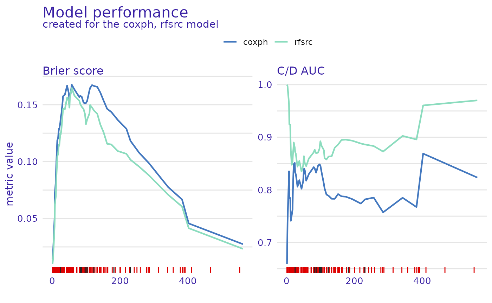
We can also plot the scalar metrics in the form of bar plots.
plot(mp_cph, mp_rsf, metrics_type="scalar")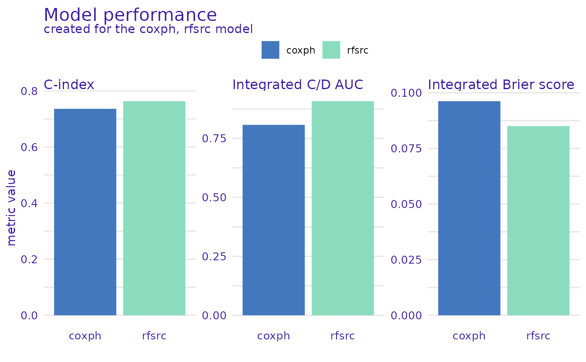
From this comparison, we see that the Random Survival Forest model is better in the Brier score metric (lower is better), Cumulative/Dynamic AUC metric (higher is better), and their integrated versions, as well as when we consider the concordance index. Therefore, it is a better candidate for making predictions but lacks interpretability compared to the Proportional Hazards model.
Global explanations
Variable importance
Next, we check how each variable influences the models’ predictions
on a global level. For this purpose, we use the
model_parts() function. It calculates permutational
variable importance with the difference being that the loss function
is time-dependent (by default it is loss_brier_score()), so
the influence of each variable can be different at each considered time
point.
model_parts_rsf <- model_parts(rsf_exp)
model_parts_cph <- model_parts(cph_exp)
plot(model_parts_cph,model_parts_rsf)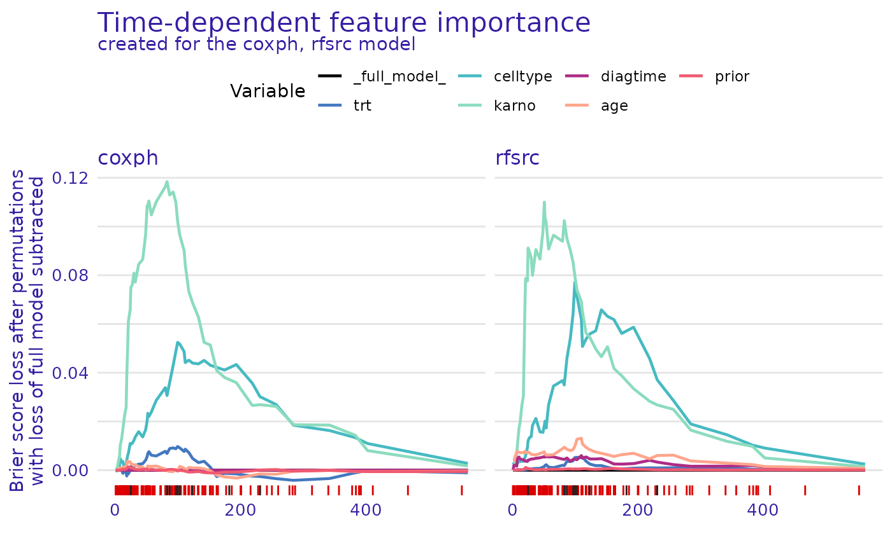
For both models, the permutation of the karno variable
leads to the highest increase in the loss function, with the second
being celltype. These two variables are the most important
for models making predictions.
We can use another loss function to ensure this observation is
consistent. Let’s use loss_one_minus_cd_auc(), but let’s
also change the plot type to show the difference between the loss
function after a given variable’s permutation and the loss of the full
model with all variables. This means that the values on the y-axis
represent only the change in the loss function after permuting each
variable.
model_parts_rsf_auc <- model_parts(rsf_exp, loss_function=loss_one_minus_cd_auc, type="difference")
model_parts_cph_auc <- model_parts(cph_exp, loss_function=loss_one_minus_cd_auc, type="difference")
# NOTE: this may take a long time, so a progress bar is available. To enable it, use:
# progressr::with_progress(model_parts(rsf_exp, loss_function=loss_one_minus_cd_auc, type="difference"))
plot(model_parts_cph_auc,model_parts_rsf_auc)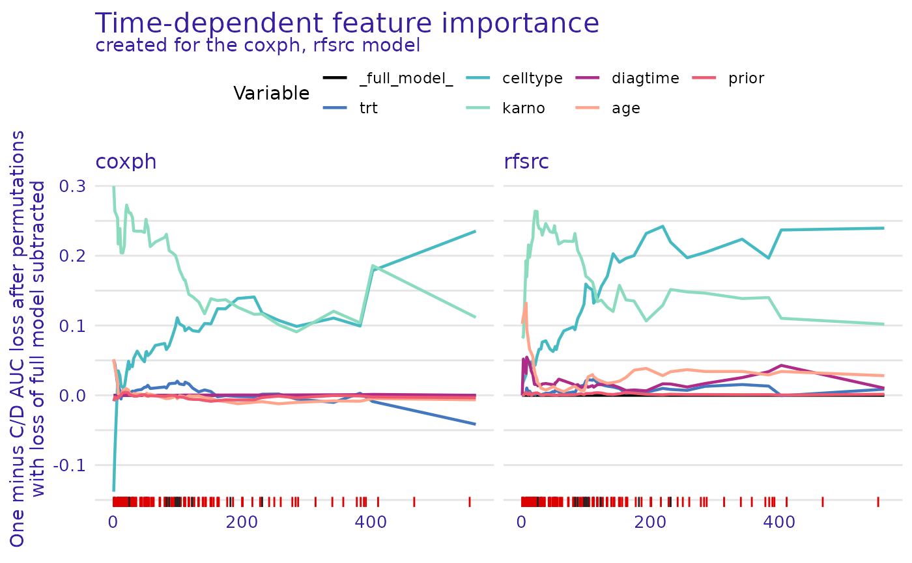
We observe that the results are consistent with
loss_brier_score(). That’s good news - a simple sanity
check that these variables are the most important for these models.
Partial dependence
The next type of global explanation this package provides is partial
dependence plots. This is calculated using the
model_profile() function. These plots show how setting one
variable to a different value would, on average, influence the model’s
prediction. Again, this is an extension of partial
dependence known from regression and classification tasks, applied
to survival models by extending it to take the time dimension into
account.
Note that we need to set the categorical_variables
parameter in order to avoid nonsensical values, such as the treatment
value of 0.5. All factors are automatically detected as categories, but
if you want to treat a numerical variable as a categorical one, you need
to set it here.
model_profile_cph <- model_profile(cph_exp, categorical_variables=c("trt", "prior"))
plot(model_profile_cph, facet_ncol = 1)
From the plot, we see that for the proportional hazards model, the
prior and diagtime variables are not very
important. The plotted bands are very thin, almost overlapping, so the
overall prediction will be similar no matter what value these variables
take. On the other hand, the karno variable has a very wide
band which means that even a small change in its value causes a big
difference in the predicted survival function. We can also see that its
lower values indicate a lower chance of survival (survival function
decreases quicker).
We can also plot the same information for the random survival forest. This time let’s change the way of plotting numerical variables, instead of the values of the variables being represented by the colors and survival function values on the y-axis, let’s swap them.
model_profile_rsf <- model_profile(rsf_exp, categorical_variables=c("trt", "prior"))
plot(model_profile_rsf, facet_ncol = 1, numerical_plot_type = "contour")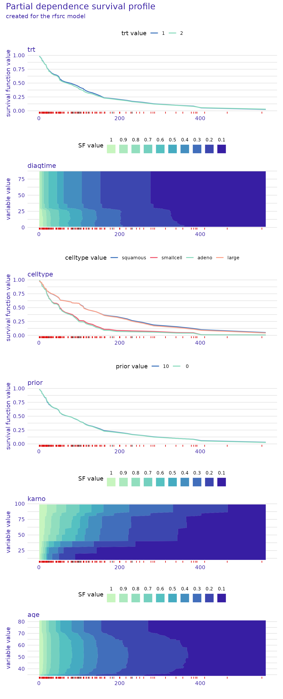
This type of plot also gives us valuable insight that is easy to
overlook in the other type. For example, we see a sharp drop in survival
function values around diagtime=25. We also observe that
the most significant influence of the karno variable is
consistent across the proportional hazards and random survival
forest.
Local explanations
Local variable attributions
Another kind of functionality provided by this package is local
explanations. The predict_parts() function can be used to
assess the importance of variables while making predictions for a
selected observation. This can be done by two methods, SurvSHAP(t) and
SurvLIME.
SurvSHAP(t)
SurvSHAP(t) explanations are an extension of SHAP values for survival models. They show a breakdown of the prediction into individual variables.
predict_parts_cph_32 <- predict_parts(cph_exp, veteran[32,])
predict_parts_rsf_32 <- predict_parts(rsf_exp, veteran[32,])
plot(predict_parts_cph_32, predict_parts_rsf_32)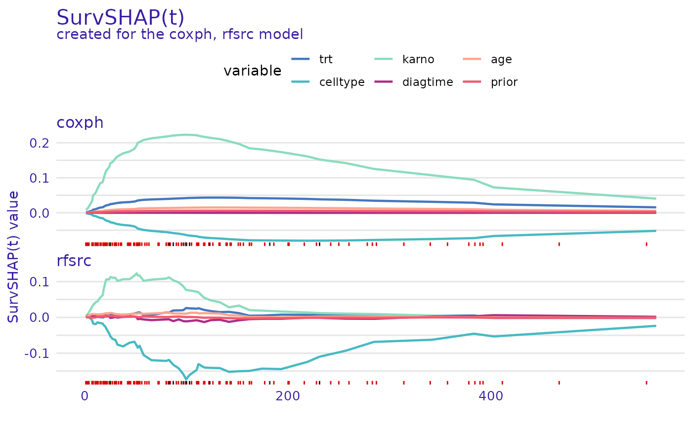
predict_parts_cph_12 <- predict_parts(cph_exp, veteran[12,])
predict_parts_rsf_12 <- predict_parts(rsf_exp, veteran[12,])
plot(predict_parts_cph_12, predict_parts_rsf_12)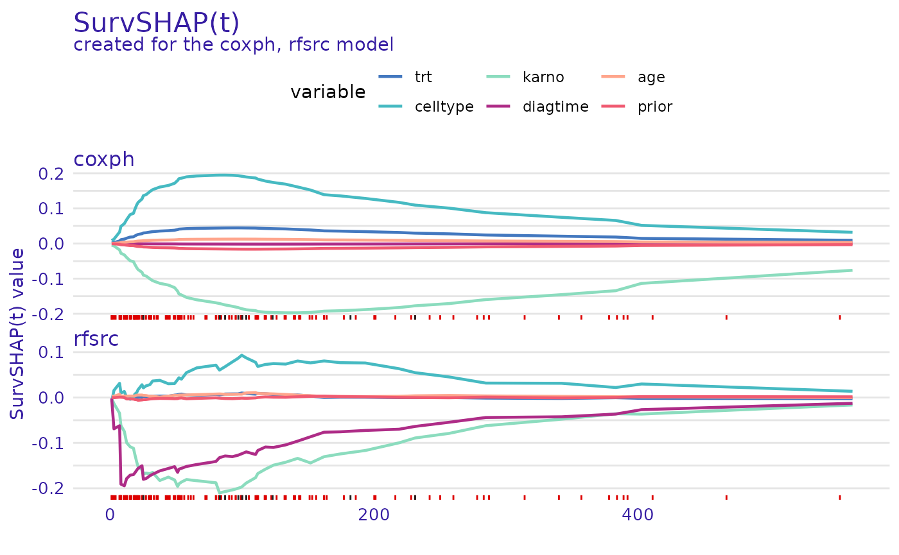
On the first plot, we see that for observation 32 from the
veteran data set, the value of karno variable
improves the chances of survival of this individual. In contrast, the
value of the celltype variable decreases them. This is true
for both explained models.
On the second plot, it can be seen, that for observation 12, the
situation is flipped, celltype increases the chances of
survival while karno decreases them. Interestingly, for the
random survival forest, one of the most influential variables is
diagtime, which the proportional hazards model almost
ignores.
SurvLIME
A different way of attributing variable importance is provided by the SurvLIME method. It works by finding a surrogate proportional hazards model that approximates the survival model at the local area around an observation of interest. Variable importance is then attributed using the coefficients of the found model.
predict_parts_cph_12_lime <- predict_parts(cph_exp, veteran[12,], type="survlime")
predict_parts_rsf_12_lime <- predict_parts(rsf_exp, veteran[12,], type="survlime")
plot(predict_parts_cph_12_lime, type="local_importance")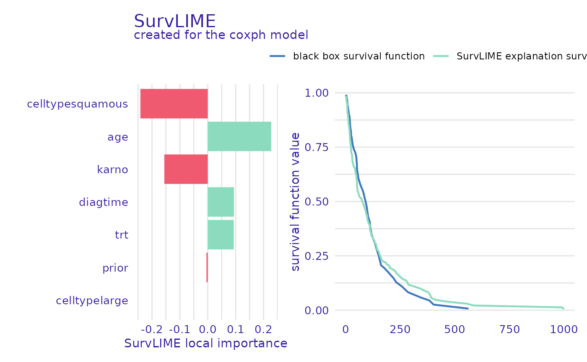
plot(predict_parts_rsf_12_lime, type="local_importance")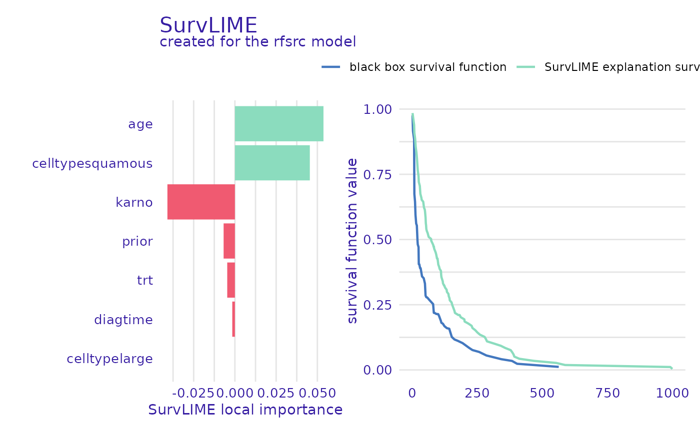
The left part of the plot shows which variables are most important and if their value increases or lowers the chances of survival, whereas the right shows the black-box model prediction together with the one from the found surrogate model. This is useful information because the closer these functions are, the more accurate the explanation can be.
Ceteris paribus
Another explanation technique provided by this package is ceteris paribus
profiles. They show how the prediction changes when we change the
value of one variable at a time. We can think of them as the equivalent
of partial dependence plots but applied to a single observation. The
predict_profile() function is used to make these
explanations.
predict_profile_cph_32 <- predict_profile(cph_exp, veteran[32,], categorical_variables=c("trt", "prior"))
plot(predict_profile_cph_32, facet_ncol=1)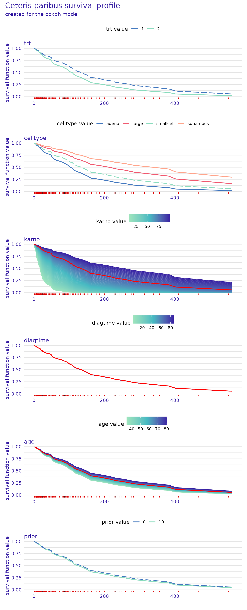
predict_profile_rsf_32 <- predict_profile(rsf_exp, veteran[32,], categorical_variables=c("trt", "prior"))
plot(predict_profile_rsf_32, facet_ncol=1)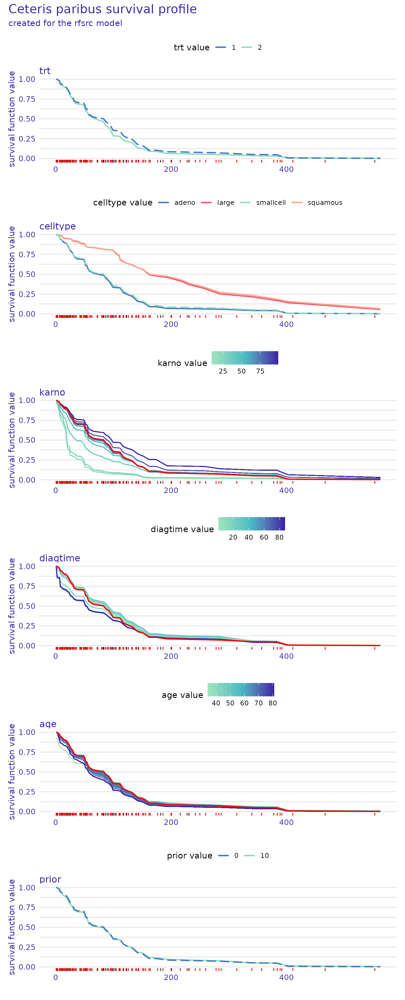
These plots also give a lot of valuable insight. For example, we see
that the prior variable does not influence the predictions
very much, as the lines representing survival functions for its
different values almost overlap. We also observe that the
celltype values of "small" and
"adeno", as well as "large" and
"squamous" result in almost the same prediction for this
observation. It can be seen that the most important variable for this
observation is karno, as the differences in the survival
function are the greatest, with low values indicating lower chances of
survival. In contrast, high values of the diagtime variable
seem to indicate lower chances of survival.